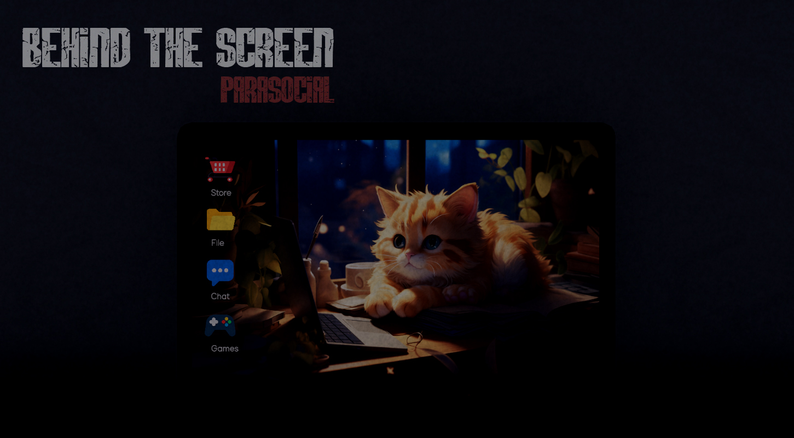
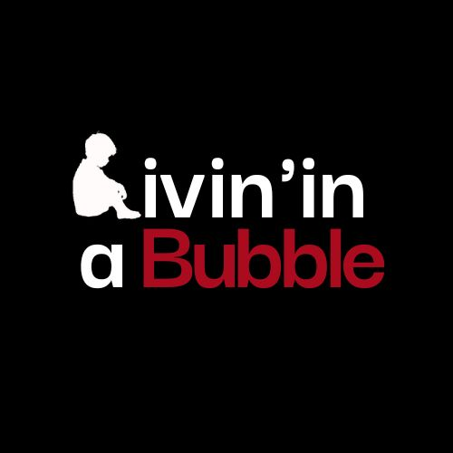
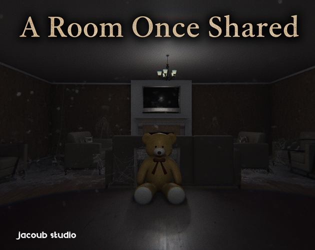
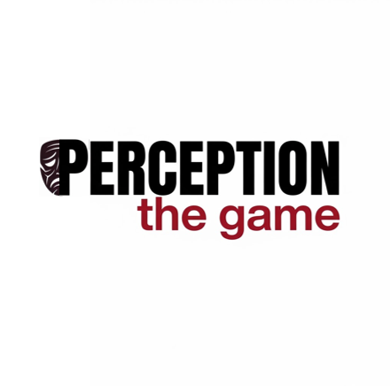
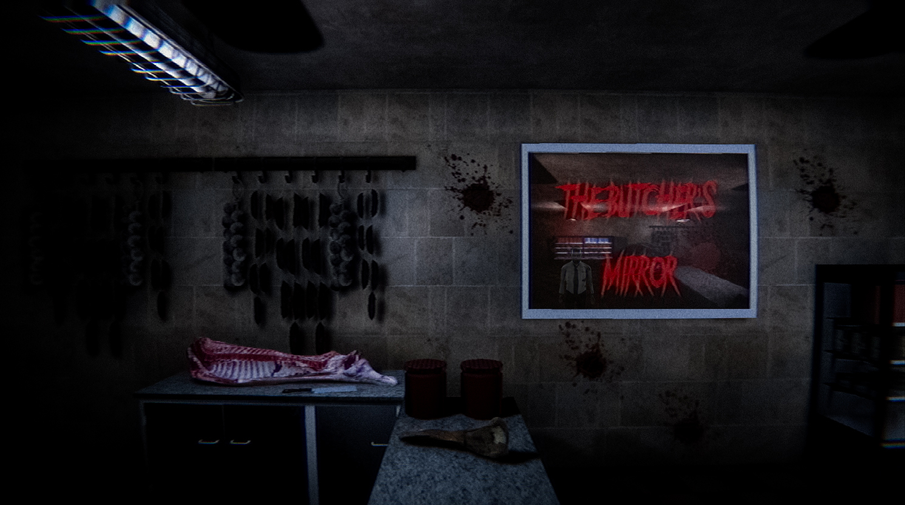

Mohamed Yacoubi
I'm Mohamed Yacoubi, a Narrative Game Designer from Tunisia. I enjoy working on games where the story is connected to what the player does, not just what they read or watch.
My projects have allowed me to explore interactive dialogue, exploration, stealth, environmental storytelling, and psychological horror. I'm interested in developing experiences that stay with players after they finish playing.
MY WORK
Projects
Games and experiments I've worked on, from my first project to my most recent.

01Behind the ScreenBehind the Screen: Parasocial
Interactive storytelling · Psychological thriller

02Livin in BubbleLivin in Bubble
Game jam · Exploration · Stealth

03A Room Once SharedA Room Once Shared
Psychological narrative experience

04PerceptionPerception
Game jam · Psychological narrative

05The Butcher's MirrorThe Butcher's Mirror
First-person psychological horror
Projects are listed in the order I created them.